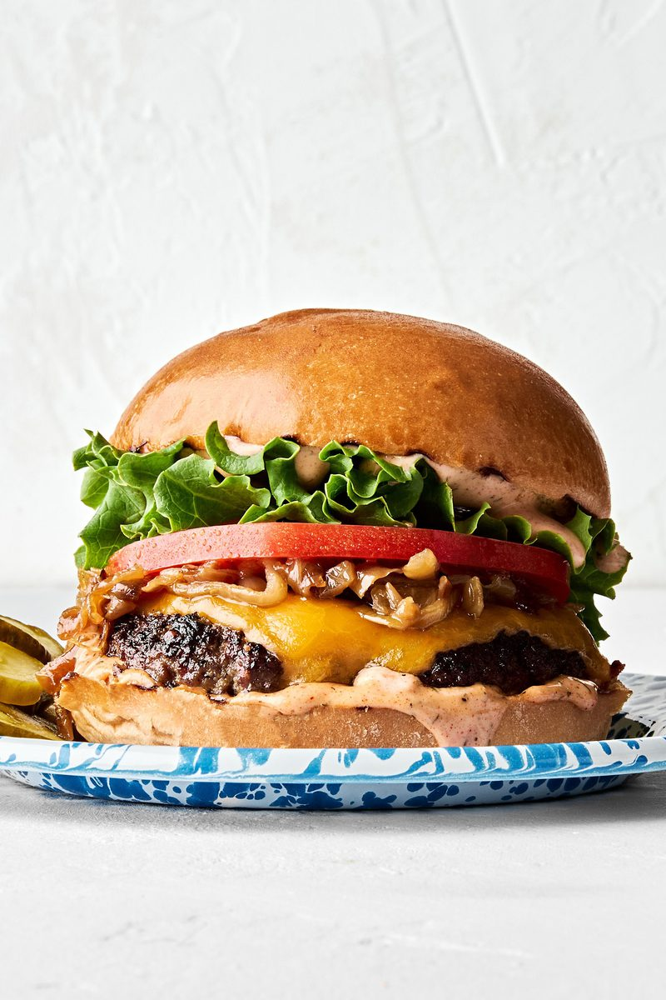

Classic Chicken Cheeseburger
Ingredients
- Burger buns (2 halves)
- Chicken patty
- Cheddar cheese slice
- Lettuce leaves
- Tomato slices
- Caramelized onions
- Burger sauce (mayonnaise + ketchup + mustard)
- Butter (for toasting buns)
- Salt and black pepper
- Pickles (optional)
Recipe Process
- Begin by seasoning the chicken patty with salt and black pepper, then cook it on a hot pan or grill over medium heat for 4–5 minutes on each side, or until fully cooked. Place a slice of cheddar cheese on the hot patty and allow it to melt. Meanwhile, lightly butter and toast the burger buns until golden brown.
- Spread burger sauce evenly on both halves of the toasted bun. Place the cheesy chicken patty on the bottom bun, then layer it with caramelized onions, fresh tomato slices, crisp lettuce leaves, and pickles if desired. Finally, cover with the top bun and gently press the burger together. Serve immediately while hot with fries, chips, or a cold drink.

Crispy Chicken Cheese Burger
Ingredients
- 1 sesame burger bun
- 1 crispy fried chicken fillet
- 1 cheddar cheese slice
- 2–3 lettuce leaves
- 2 tomato slices
- 2 tbsp spicy burger sauce (mayonnaise, ketchup, and chili sauce mixed)
- 1 tsp butter
- Salt and black pepper (to taste)
- Pickles (optional)
Making Process
- Season the chicken with salt and black pepper, coat it in seasoned flour or breadcrumbs, and deep-fry until crispy and golden brown. Place a cheddar cheese slice on the hot chicken and let it melt. Meanwhile, butter and lightly toast the sesame burger bun.
- Spread the spicy burger sauce on both halves of the bun. Place the crispy chicken fillet on the bottom bun, then add fresh lettuce and tomato slices. Cover with the top bun and press gently. Serve immediately while hot with French fries, pickles, and your favorite dipping sauce.

Double Crispy Chicken Cheese Burger
Ingredients
- 1 sesame burger bun
- 2 crispy fried chicken fillets
- 2 cheddar cheese slices
- 3–4 lettuce leaves
- 3 tomato slices
- 2 tbsp burger sauce (mayonnaise, ketchup, and mustard mixed)
- 1 tsp butter
- Salt and black pepper (to taste)
- Pickles
Recipe Process
- Season the chicken fillets with salt and black pepper, coat them with seasoned flour or breadcrumbs, and deep-fry until crispy and golden brown. Place a cheddar cheese slice on each hot chicken fillet and allow the cheese to melt. Butter and toast the sesame burger bun until lightly golden.
- Spread burger sauce evenly on both halves of the bun. Place one crispy chicken fillet on the bottom bun, followed by lettuce and tomato slices. Add the second cheesy chicken fillet on top, then finish with more lettuce if desired. Cover with the top bun, press gently, and serve immediately while hot with French fries and your favorite dipping sauce.

Hot Honey Crispy Chicken Burger
Ingredients
- 1 brioche or burger bun
- 2 crispy fried chicken fillets
- ½ cup shredded cabbage
- ¼ cup shredded purple cabbage
- 2 tbsp hot honey sauce
- 1 tbsp mayonnaise
- 1 tsp butter
- Salt and black pepper (to taste)
- Pickles (optional)
Recipe Process
- Prepare the coleslaw by mixing the shredded green and purple cabbage with mayonnaise until well combined. Season the chicken with salt and black pepper, coat it with seasoned flour or breadcrumbs, and deep-fry until crispy and golden brown. While still hot, brush each chicken fillet generously with hot honey sauce to create a sweet and spicy glaze.
- Lightly butter and toast the brioche bun until golden. Spread a thin layer of mayonnaise on the bottom bun, then add the prepared coleslaw. Stack the hot honey glazed crispy chicken fillets on top and drizzle with extra hot honey sauce. Finish with the top bun and serve immediately with French fries, potato wedges, or your favorite dipping sauce.

Nashville Hot Chicken Burger
Ingredients
- 1 brioche or burger bun
- 2 crispy fried chicken fillets
- 2 tbsp Nashville hot sauce
- 2 tbsp mayonnaise
- 4–5 pickle slices
- 2–3 red onion rings
- 1 tsp butter
- Salt and black pepper (to taste)
Recipe Process
- Season the chicken with salt and black pepper, coat it with seasoned flour or breadcrumbs, and deep-fry until crispy and golden brown. While the chicken is still hot, brush it generously with Nashville hot sauce to give it a bold, spicy flavor. Butter and lightly toast the brioche bun until golden.
- Spread mayonnaise evenly on the bottom bun, then add the crispy hot chicken fillets. Top with red onion rings and sliced pickles for extra crunch and tanginess. Finish with the top bun, press gently, and serve immediately with French fries, coleslaw, and your favorite dipping sauce.